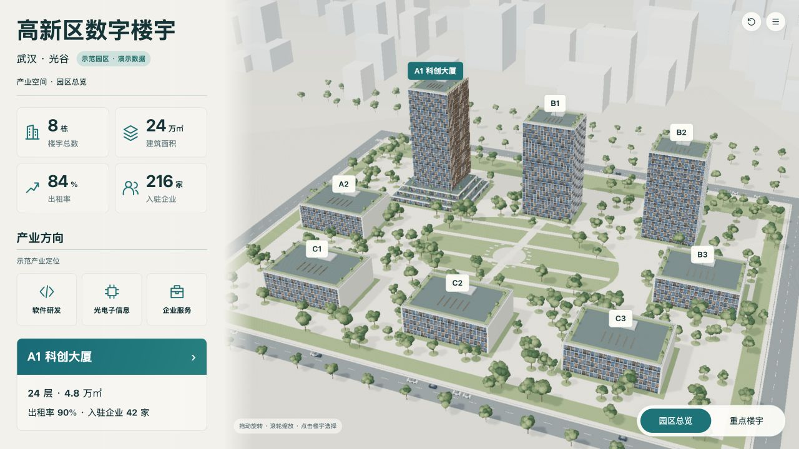
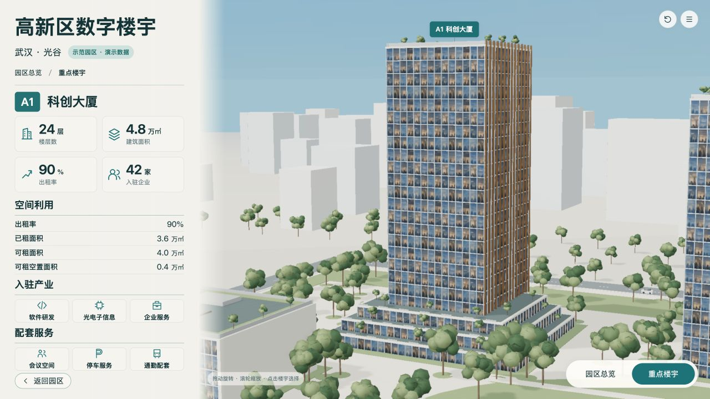

锁定B-campus-v2与B-building-v2r1，不裁切、不拉伸基准；演示快照A1、巡览关闭，固定该版制作相机。新旧版本图片保留。
两图保留原始比例，AI图不具备测绘精度；对照不把AI不可数细节当作工程数据。浏览器截图是实际WebGL画面。



| ID | 预期 | 实际 | 原因假设 | 源修改 | 重建/复验证据 | 结果 | 后续 |
|---|---|---|---|---|---|---|---|
| E-02 | AO开启后绘制调用≤350 | 1920目标视口实测约203次、P95约33.4ms | 静态阴影反复计算 | 只在模型载入后更新一次静态阴影 | target-performance-v8r2.json | 当前环境通过 | 目标硬件与长时运行未测 |
| U-02 | 1080高画布底部至少28px安全距离 | 返回按钮边界由1058.8修正至1051.8，安全距离28.2px | 组件纵向叠加占用略大 | 回到CSS减少按钮上下内边距和上边距 | layout-1920-v8.json → layout-1920-v8r2.json | 已修复 | 保留原截图审计 |
| I-02 | 进入和退出全屏有可观察状态 | 应用fullscreenchange驱动文案退出全屏/全屏展示 | 旧UI没有明确状态，DOM镜像属性不适合作判据 | 添加全屏事件订阅、状态文案与不支持窗口提示 | fullscreen-v8r2.json | 已实际验证进出 | 不声称覆盖所有浏览器或显示器 |
[
{
"level": "campus",
"baseline": "design/concepts/B-campus-v2.png",
"baselineSha256": "b7256276a9357e0255ac1799e189de000f3c69563e0672624b826acfb76db264",
"actual": "checks/campus-detailed-v8r2.jpg",
"actualSha256": "a125c232e6bf028f74249d8e67550f55b034d1b979d9c71fceb0147a2431d19a"
},
{
"level": "building",
"baseline": "design/concepts/B-building-v2r1.png",
"baselineSha256": "1aa5b6d94d1b17ae9b7eb815fa59fa75c1f0f44f88a9f2e41045d85aae8f43e4",
"actual": "checks/building-detailed-v8r2.jpg",
"actualSha256": "298e908f0b343213022c5eb67de25b0df0fb0fcd09598cca9781ccb64cd8fe77"
}
]